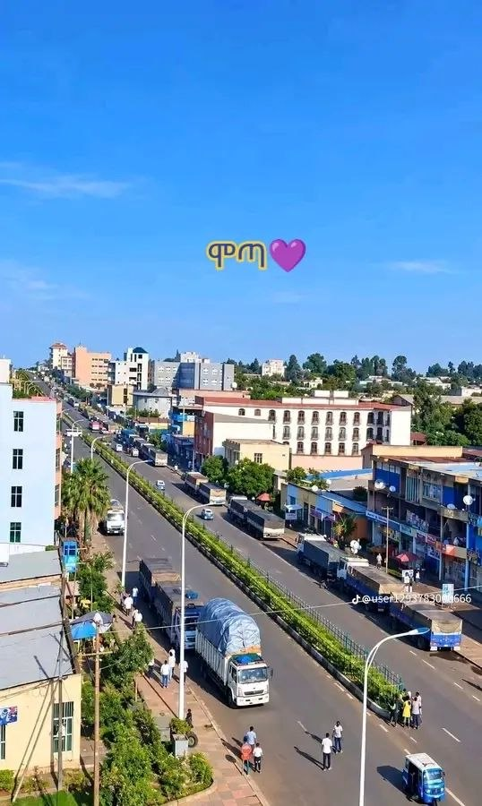

Education Background
My academic journey, schools, and professional training
Wolaita Sodo University
BSc in Information Technology (IT)
📍 Wolaita Sodo, Ethiopia | 3rd Year Student
Currently pursuing my Bachelor of Science degree in Information Technology. Focused on software engineering, database management systems, web development, and mobile app programming.

Motta High School
Secondary & Preparatory School
📍 Motta, East Gojjam, Amhara Region, Ethiopia
Completed my high school and preparatory education in Motta town. Built a strong foundation in natural sciences and analytical thinking before joining university.
💡 Academic Focus & Goals
My academic background combines rigorous theoretical concepts learned at Wolaita Sodo University with hands-on practical software development projects, aiming to solve real-world problems in Ethiopia through reliable tech solutions.